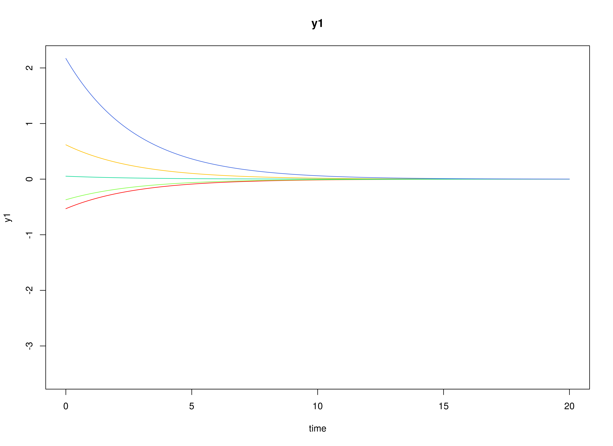

Model
The measurement model is given by \[\begin{equation} \mathbf{y}_{i, t} = \boldsymbol{\nu} + \boldsymbol{\Lambda} \boldsymbol{\eta}_{i, t} + \boldsymbol{\varepsilon}_{i, t}, \quad \mathrm{with} \quad \boldsymbol{\varepsilon}_{i, t} \sim \mathcal{N} \left( \mathbf{0}, \boldsymbol{\Theta} \right) \end{equation}\] where \(\mathbf{y}_{i, t}\), \(\boldsymbol{\eta}_{i, t}\), and \(\boldsymbol{\varepsilon}_{i, t}\) are random variables and \(\boldsymbol{\nu}\), \(\boldsymbol{\Lambda}\), and \(\boldsymbol{\Theta}\) are model parameters. \(\mathbf{y}_{i, t}\) represents a vector of observed random variables, \(\boldsymbol{\eta}_{i, t}\) a vector of latent random variables, and \(\boldsymbol{\varepsilon}_{i, t}\) a vector of random measurement errors, at time \(t\) and individual \(i\). \(\boldsymbol{\nu}\) denotes a vector of intercepts, \(\boldsymbol{\Lambda}\) a matrix of factor loadings, and \(\boldsymbol{\Theta}\) the covariance matrix of \(\boldsymbol{\varepsilon}\).
An alternative representation of the measurement error is given by \[\begin{equation} \boldsymbol{\varepsilon}_{i, t} = \boldsymbol{\Theta}^{\frac{1}{2}} \mathbf{z}_{i, t}, \quad \mathrm{with} \quad \mathbf{z}_{i, t} \sim \mathcal{N} \left( \mathbf{0}, \mathbf{I} \right) \end{equation}\] where \(\mathbf{z}_{i, t}\) is a vector of independent standard normal random variables and \(\left( \boldsymbol{\Theta}^{\frac{1}{2}} \right) \left( \boldsymbol{\Theta}^{\frac{1}{2}} \right)^{\prime} = \boldsymbol{\Theta}\) .
The dynamic structure is given by \[\begin{equation} \mathrm{d} \boldsymbol{\eta}_{i, t} = - \boldsymbol{\Phi} \left( \boldsymbol{\mu} - \boldsymbol{\eta}_{i, t} \right) \mathrm{d}t + \boldsymbol{\Sigma}^{\frac{1}{2}} \mathrm{d} \mathbf{W}_{i, t} \end{equation}\] where \(\boldsymbol{\mu}\) is the long-term mean or equilibrium level, \(- \boldsymbol{\Phi}\) is the rate of mean reversion, determining how quickly the variable returns to its mean, \(\boldsymbol{\Sigma}\) is the matrix of volatility or randomness in the process, and \(\mathrm{d}\boldsymbol{W}\) is a Wiener process or Brownian motion, which represents random fluctuations.
Data Generation
Notation
Let \(t = 1000\) be the number of time points and \(n = 100\) be the number of individuals.
Let the measurement model intecept vector \(\boldsymbol{\nu}\) be given by
\[\begin{equation} \boldsymbol{\nu} = \left( \begin{array}{c} 0 \\ 0 \\ 0 \\ \end{array} \right) . \end{equation}\]
Let the factor loadings matrix \(\boldsymbol{\Lambda}\) be given by
\[\begin{equation} \boldsymbol{\Lambda} = \left( \begin{array}{ccc} 1 & 0 & 0 \\ 0 & 1 & 0 \\ 0 & 0 & 1 \\ \end{array} \right) . \end{equation}\]
Let the measurement error covariance matrix \(\boldsymbol{\Theta}\) be given by
\[\begin{equation} \boldsymbol{\Theta} = \left( \begin{array}{ccc} 0.001 & 0 & 0 \\ 0 & 0.001 & 0 \\ 0 & 0 & 0.001 \\ \end{array} \right) . \end{equation}\]
Let the initial condition \(\boldsymbol{\eta}_{0}\) be given by
\[\begin{equation} \boldsymbol{\eta}_{0} \sim \mathcal{N} \left( \boldsymbol{\mu}_{\boldsymbol{\eta} \mid 0}, \boldsymbol{\Sigma}_{\boldsymbol{\eta} \mid 0} \right) \end{equation}\]
\[\begin{equation} \boldsymbol{\mu}_{\boldsymbol{\eta} \mid 0} = \left( \begin{array}{c} 0 \\ 0 \\ 0 \\ \end{array} \right) \end{equation}\]
\[\begin{equation} \boldsymbol{\Sigma}_{\boldsymbol{\eta} \mid 0} = \left( \begin{array}{ccc} 0.001 & 0 & 0 \\ 0 & 0.001 & 0 \\ 0 & 0 & 0.001 \\ \end{array} \right) . \end{equation}\]
Let the long-term mean vector \(\boldsymbol{\mu}\) be given by
\[\begin{equation} \boldsymbol{\mu} = \left( \begin{array}{c} 0 \\ 0 \\ 0 \\ \end{array} \right) . \end{equation}\]
Let the rate of mean reversion matrix \(- \boldsymbol{\Phi}\) be given by
\[\begin{equation} - \boldsymbol{\Phi} = \left( \begin{array}{ccc} 0.357 & 0 & 0 \\ -0.771 & 0.511 & 0 \\ 0.45 & -0.729 & 0.693 \\ \end{array} \right) . \end{equation}\]
Let the dynamic process noise covariance matrix \(\boldsymbol{\Sigma}\) be given by
\[\begin{equation} \boldsymbol{\Sigma} = \left( \begin{array}{ccc} 0.001 & 0 & 0 \\ 0 & 0.001 & 0 \\ 0 & 0 & 0.001 \\ \end{array} \right) . \end{equation}\]
Let \(\Delta t = 0.1\).
R Function Arguments
n
#> [1] 100
time
#> [1] 1000
delta_t
#> [1] 0.1
mu0
#> [1] 0 0 0
sigma0
#> [,1] [,2] [,3]
#> [1,] 0.001 0.000 0.000
#> [2,] 0.000 0.001 0.000
#> [3,] 0.000 0.000 0.001
mu
#> [1] 0 0 0
phi
#> [,1] [,2] [,3]
#> [1,] -0.357 0.000 0.000
#> [2,] 0.771 -0.511 0.000
#> [3,] -0.450 0.729 -0.693
sigma
#> [,1] [,2] [,3]
#> [1,] 0.001 0.000 0.000
#> [2,] 0.000 0.001 0.000
#> [3,] 0.000 0.000 0.001
nu
#> [1] 0 0 0
lambda
#> [,1] [,2] [,3]
#> [1,] 1 0 0
#> [2,] 0 1 0
#> [3,] 0 0 1
theta
#> [,1] [,2] [,3]
#> [1,] 0.001 0.000 0.000
#> [2,] 0.000 0.001 0.000
#> [3,] 0.000 0.000 0.001Visualizing the Dynamics Without Measurement Error and Process Noise (\(n = 5\) with Different Initial Condition)


Using the SimSSMOUFixed Function from the simStateSpace Package to Simulate Data
library(simStateSpace)
sim <- SimSSMOUFixed(
n = n,
time = time,
delta_t = delta_t,
mu0 = mu0,
sigma0_l = sigma0_l,
mu = mu,
phi = phi,
sigma_l = sigma_l,
nu = nu,
lambda = lambda,
theta_l = theta_l,
type = 0
)
data <- as.data.frame(sim)
head(data)
#> id time y1 y2 y3
#> 1 1 0.0 0.035409134 -0.069437973 0.076281806
#> 2 1 0.1 -0.056374677 0.028657458 0.041923629
#> 3 1 0.2 0.035590619 0.008633087 0.072845306
#> 4 1 0.3 0.005176837 -0.023274379 0.063279997
#> 5 1 0.4 -0.093736781 0.013966653 -0.002381511
#> 6 1 0.5 -0.041411100 0.065758760 0.008285055
plot(sim)


Model Fitting
Prepare Initial Condition
dynr_initial <- dynr::prep.initial(
values.inistate = mu0,
params.inistate = c("mu0_1", "mu0_2", "mu0_3"),
values.inicov = sigma0,
params.inicov = matrix(
data = c(
"sigma0_11", "sigma0_12", "sigma0_13",
"sigma0_12", "sigma0_22", "sigma0_23",
"sigma0_13", "sigma0_23", "sigma0_33"
),
nrow = 3
)
)Prepare Measurement Model
dynr_measurement <- dynr::prep.measurement(
values.load = diag(3),
params.load = matrix(data = "fixed", nrow = 3, ncol = 3),
state.names = c("eta_1", "eta_2", "eta_3"),
obs.names = c("y1", "y2", "y3")
)Prepare Dynamic Process
dynr_dynamics <- dynr::prep.formulaDynamics(
formula = list(
eta_1 ~ (-phi_11 * (mu_1 - eta_1)) + (-phi_12 * (mu_2 - eta_2)) + (-phi_13 * (mu_3 - eta_3)),
eta_2 ~ (-phi_21 * (mu_1 - eta_1)) + (-phi_22 * (mu_2 - eta_2)) + (-phi_23 * (mu_3 - eta_3)),
eta_3 ~ (-phi_31 * (mu_1 - eta_1)) + (-phi_32 * (mu_2 - eta_2)) + (-phi_33 * (mu_3 - eta_3))
),
startval = c(
mu_1 = mu[1], mu_2 = mu[2], mu_3 = mu[3],
phi_11 = phi[1, 1], phi_12 = phi[1, 2], phi_13 = phi[1, 3],
phi_21 = phi[2, 1], phi_22 = phi[2, 2], phi_23 = phi[2, 3],
phi_31 = phi[3, 1], phi_32 = phi[3, 2], phi_33 = phi[3, 3]
),
isContinuousTime = TRUE
)Prepare Process Noise
dynr_noise <- dynr::prep.noise(
values.latent = sigma,
params.latent = matrix(
data = c(
"sigma_11", "sigma_12", "sigma_13",
"sigma_12", "sigma_22", "sigma_23",
"sigma_13", "sigma_23", "sigma_33"
),
nrow = 3
),
values.observed = theta,
params.observed = matrix(
data = c(
"theta_11", "fixed", "fixed",
"fixed", "theta_22", "fixed",
"fixed", "fixed", "theta_33"
),
nrow = 3
)
)Prepare the Model
model <- dynr::dynr.model(
data = dynr_data,
initial = dynr_initial,
measurement = dynr_measurement,
dynamics = dynr_dynamics,
noise = dynr_noise,
outfile = "ou.c"
)Add lower and upper bounds to aid in the optimization.
model$lb[
c(
"phi_11",
"phi_12",
"phi_13",
"phi_21",
"phi_22",
"phi_23",
"phi_31",
"phi_32",
"phi_33"
)
] <- -1.5
model$ub[
c(
"phi_11",
"phi_12",
"phi_13",
"phi_21",
"phi_22",
"phi_23",
"phi_31",
"phi_32",
"phi_33"
)
] <- +1.5
Fit the Model
results <- dynr::dynr.cook(
model,
debug_flag = TRUE,
verbose = FALSE
)
#> [1] "Get ready!!!!"
#> using C compiler: ‘gcc (Ubuntu 11.4.0-1ubuntu1~22.04) 11.4.0’
#> Optimization function called.
#> Starting Hessian calculation ...
#> Finished Hessian calculation.
#> Original exit flag: 3
#> Modified exit flag: 3
#> Optimization terminated successfully: ftol_rel or ftol_abs was reached.
#> Original fitted parameters: -0.0003045344 -0.0007440821 7.383527e-05
#> -0.3498915 0.016045 -0.02519842 0.7567773 -0.5101614 0.009547995 -0.4698892
#> 0.7403134 -0.7032845 -6.909877 -0.003042699 0.00400146 -6.903263 -0.009489922
#> -6.929013 -6.913363 -6.908594 -6.901314 0.0006299279 0.00031309 0.001367095
#> -6.827596 0.1038118 0.148578 -7.074263 -0.059111 -6.894194
#>
#> Transformed fitted parameters: -0.0003045344 -0.0007440821 7.383527e-05
#> -0.3498915 0.016045 -0.02519842 0.7567773 -0.5101614 0.009547995 -0.4698892
#> 0.7403134 -0.7032845 0.0009978809 -3.036251e-06 3.99298e-06 0.001004512
#> -9.544801e-06 0.0009790733 0.0009944076 0.0009991614 0.001006462 0.0006299279
#> 0.00031309 0.001367095 0.001083459 0.0001124759 0.0001609782 0.000858293
#> -3.333292e-05 0.001040529
#>
#> Doing end processing
#> Successful trial
#> Total Time: 2.903021
#> Backend Time: 2.902751Summary
summary(results)
#> Coefficients:
#> Estimate Std. Error t value ci.lower ci.upper Pr(>|t|)
#> mu_1 -3.045e-04 9.151e-04 -0.333 -2.098e-03 1.489e-03 0.3696
#> mu_2 -7.441e-04 1.495e-03 -0.498 -3.675e-03 2.186e-03 0.3094
#> mu_3 7.384e-05 1.139e-03 0.065 -2.158e-03 2.306e-03 0.4742
#> phi_11 -3.499e-01 2.098e-02 -16.674 -3.910e-01 -3.088e-01 <2e-16 ***
#> phi_12 1.605e-02 1.724e-02 0.931 -1.774e-02 4.983e-02 0.1760
#> phi_13 -2.520e-02 1.396e-02 -1.805 -5.256e-02 2.160e-03 0.0355 *
#> phi_21 7.568e-01 2.193e-02 34.509 7.138e-01 7.998e-01 <2e-16 ***
#> phi_22 -5.102e-01 1.921e-02 -26.561 -5.478e-01 -4.725e-01 <2e-16 ***
#> phi_23 9.548e-03 1.527e-02 0.625 -2.037e-02 3.947e-02 0.2658
#> phi_31 -4.699e-01 2.105e-02 -22.324 -5.111e-01 -4.286e-01 <2e-16 ***
#> phi_32 7.403e-01 1.813e-02 40.822 7.048e-01 7.759e-01 <2e-16 ***
#> phi_33 -7.033e-01 1.513e-02 -46.477 -7.329e-01 -6.736e-01 <2e-16 ***
#> sigma_11 9.979e-04 2.542e-05 39.254 9.481e-04 1.048e-03 <2e-16 ***
#> sigma_12 -3.036e-06 1.617e-05 -0.188 -3.473e-05 2.865e-05 0.4255
#> sigma_13 3.993e-06 1.583e-05 0.252 -2.704e-05 3.503e-05 0.4005
#> sigma_22 1.005e-03 2.418e-05 41.552 9.571e-04 1.052e-03 <2e-16 ***
#> sigma_23 -9.545e-06 1.559e-05 -0.612 -4.011e-05 2.102e-05 0.2703
#> sigma_33 9.791e-04 2.282e-05 42.895 9.343e-04 1.024e-03 <2e-16 ***
#> theta_11 9.944e-04 5.598e-06 177.628 9.834e-04 1.005e-03 <2e-16 ***
#> theta_22 9.992e-04 5.573e-06 179.293 9.882e-04 1.010e-03 <2e-16 ***
#> theta_33 1.006e-03 5.586e-06 180.168 9.955e-04 1.017e-03 <2e-16 ***
#> mu0_1 6.299e-04 3.710e-03 0.170 -6.642e-03 7.902e-03 0.4326
#> mu0_2 3.131e-04 3.421e-03 0.092 -6.393e-03 7.019e-03 0.4635
#> mu0_3 1.367e-03 3.705e-03 0.369 -5.894e-03 8.629e-03 0.3561
#> sigma0_11 1.083e-03 1.937e-04 5.595 7.039e-04 1.463e-03 <2e-16 ***
#> sigma0_12 1.125e-04 1.114e-04 1.009 -1.059e-04 3.309e-04 0.1564
#> sigma0_13 1.610e-04 1.454e-04 1.107 -1.240e-04 4.459e-04 0.1341
#> sigma0_22 8.583e-04 1.655e-04 5.185 5.339e-04 1.183e-03 <2e-16 ***
#> sigma0_23 -3.333e-05 1.348e-04 -0.247 -2.975e-04 2.309e-04 0.4023
#> sigma0_33 1.041e-03 1.951e-04 5.332 6.580e-04 1.423e-03 <2e-16 ***
#> ---
#> Signif. codes: 0 '***' 0.001 '**' 0.01 '*' 0.05 '.' 0.1 ' ' 1
#>
#> -2 log-likelihood value at convergence = -1139720.19
#> AIC = -1139660.19
#> BIC = -1139374.80#> [1] 0.0006299279 0.0003130900 0.0013670946Parameter Estimates
mu_hat
#> [1] -3.045344e-04 -7.440821e-04 7.383527e-05
phi_hat
#> [,1] [,2] [,3]
#> [1,] -0.3498915 0.0160450 -0.025198423
#> [2,] 0.7567773 -0.5101614 0.009547995
#> [3,] -0.4698892 0.7403134 -0.703284461
sigma_hat
#> [,1] [,2] [,3]
#> [1,] 9.978809e-04 -3.036251e-06 3.992980e-06
#> [2,] -3.036251e-06 1.004512e-03 -9.544801e-06
#> [3,] 3.992980e-06 -9.544801e-06 9.790733e-04
mu0_hat
#> [1] 0.0006299279 0.0003130900 0.0013670946
sigma0_hat
#> [,1] [,2] [,3]
#> [1,] 0.0010834592 1.124759e-04 1.609782e-04
#> [2,] 0.0001124759 8.582930e-04 -3.333292e-05
#> [3,] 0.0001609782 -3.333292e-05 1.040529e-03
beta_var1_hat <- expm::expm(phi_hat)
beta_var1_hat
#> [,1] [,2] [,3]
#> [1,] 0.7110918 0.004927884 -0.0149837337
#> [2,] 0.4936493 0.604839534 -0.0004523223
#> [3,] -0.1130786 0.403899580 0.4987985916